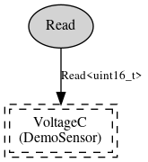

DemoSensorC is a generic sensor device that provides a 16-bit value. The platform author chooses which sensor actually sits behind DemoSensorC, and though it's probably Voltage, Light, or Temperature, there are no guarantees. This particular DemoSensorC on the telosb platform provides a voltage reading, using VoltageC. To convert from ADC counts to actual voltage, divide this reading by 4096 and multiply by 3.
